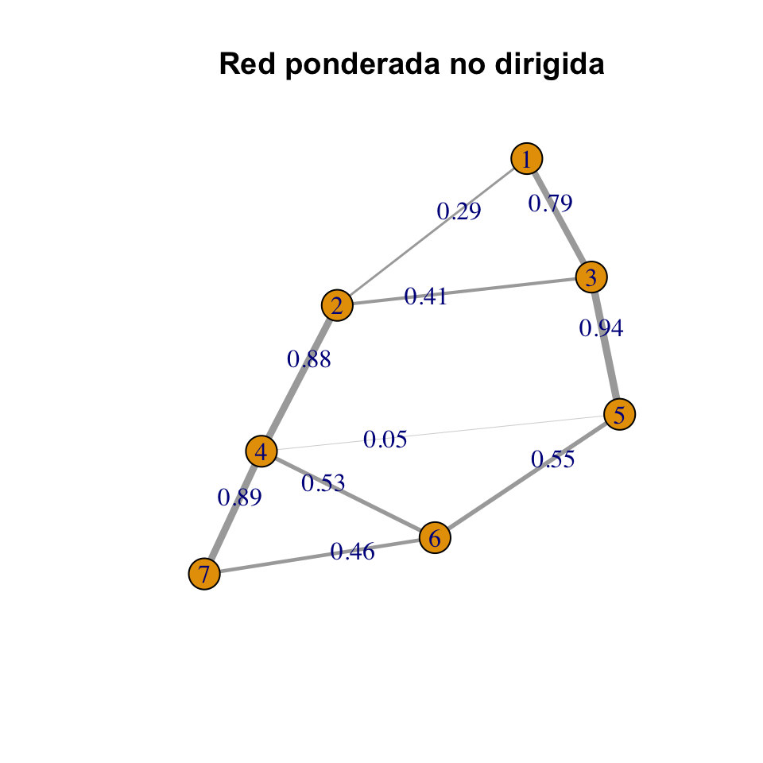
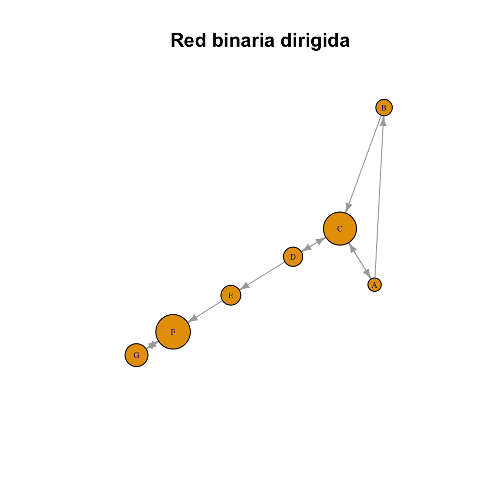
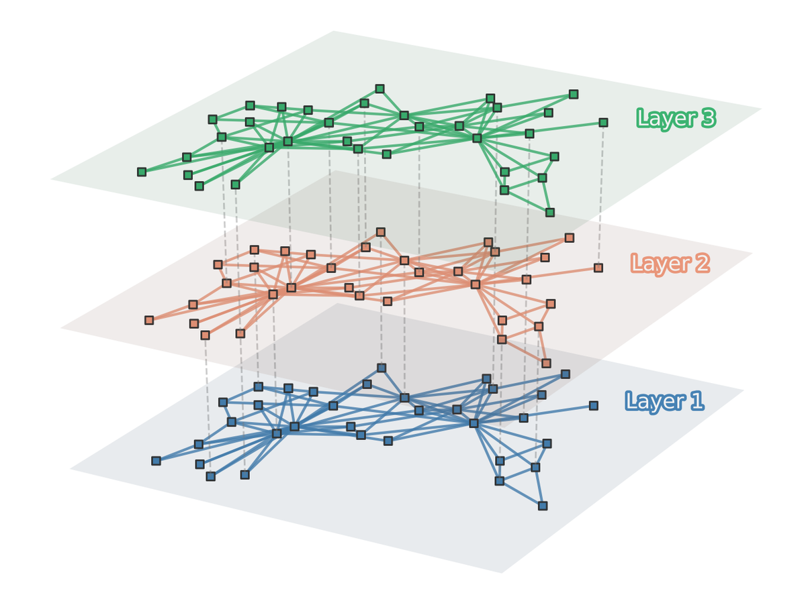
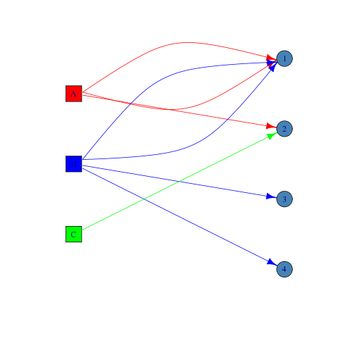
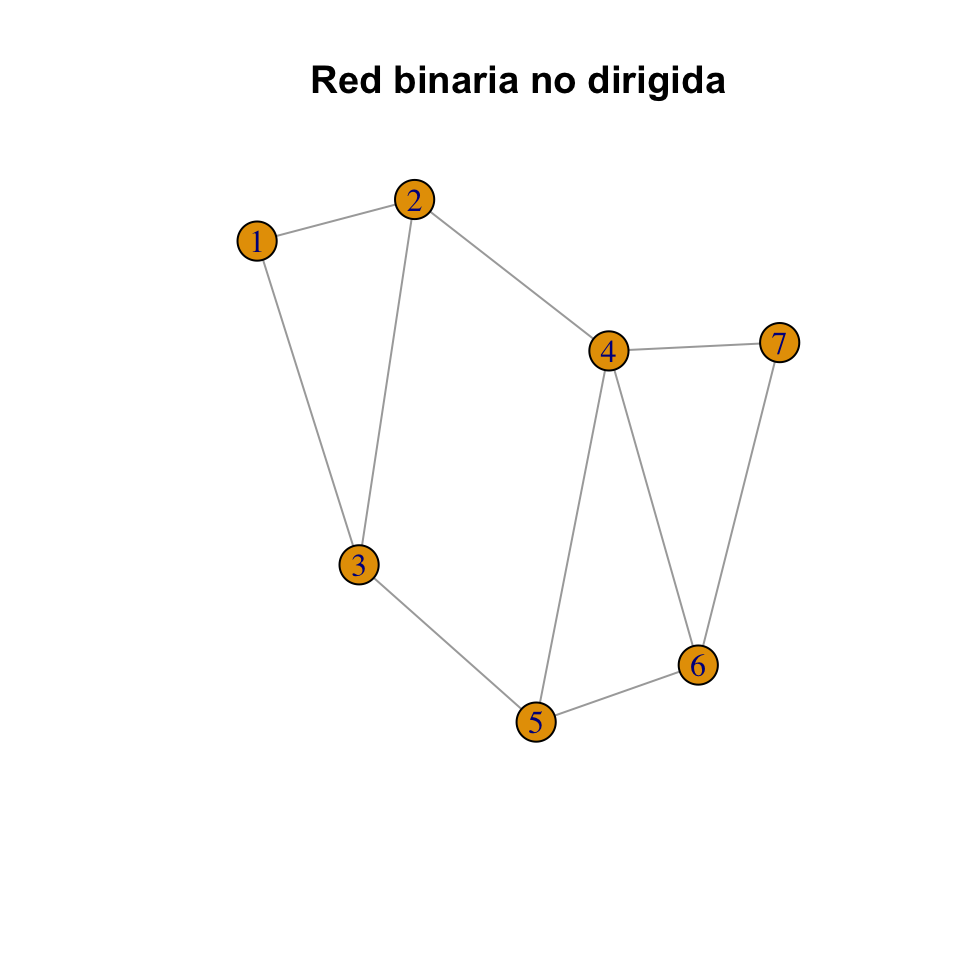
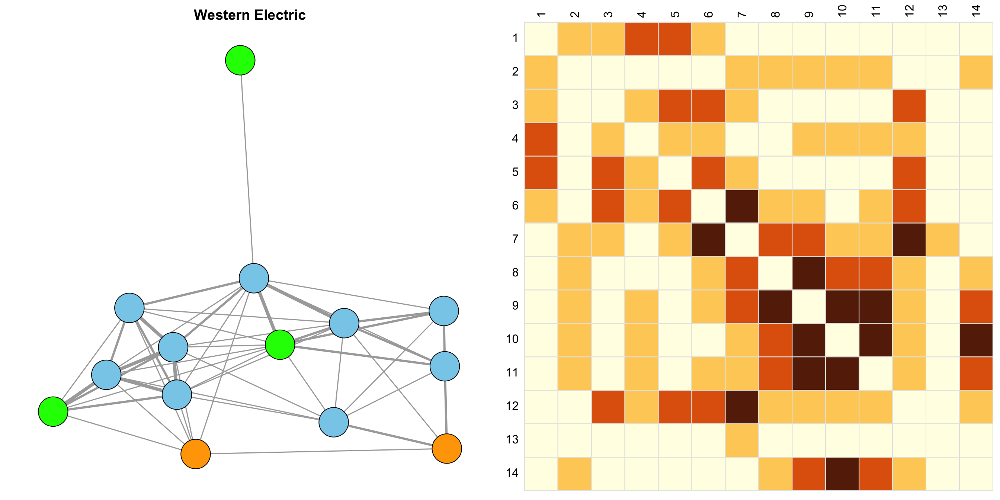
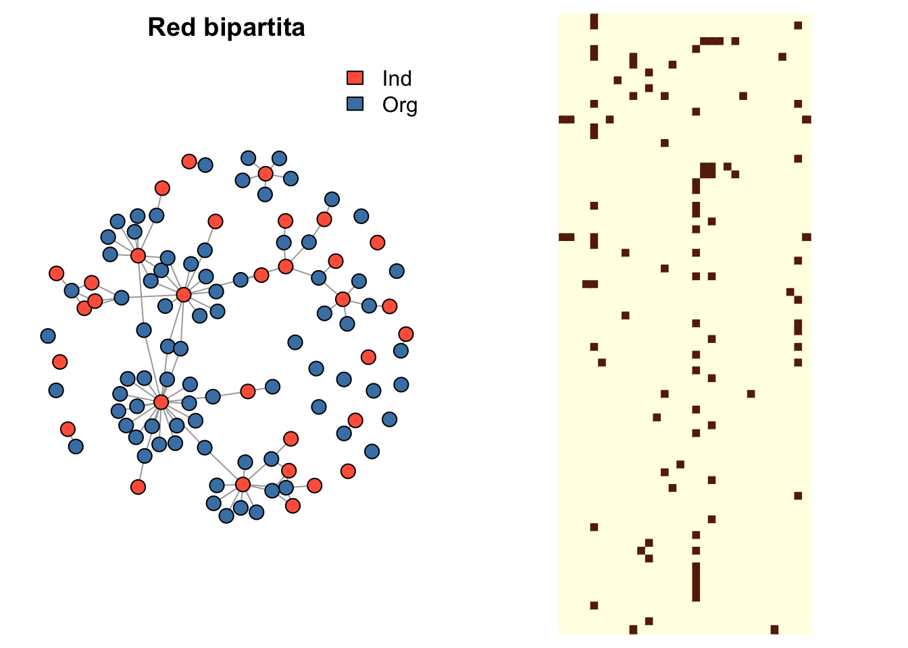
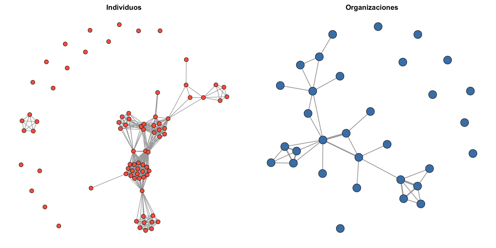

Capítulo 2 Gestión de datos relacionales
2.1 Introducción
Conformación, almacenamiento y gestión de datos relacionales:
- Variables diádicas.
- Variables nodales.
- Variables derivadas (e.g., indicadoras de grupos).
Un grafo por sí solo (una colección de vértices y aristas) suele ser insuficiente para representar todos los atributos una red.
La decoración de un grafo corresponde a la conjunción de vértices y aristas con otras variables de interés (atributos).
2.2 Grafos
Un grafo \(G = (V, E)\) es una estructura que consiste de un conjunto de vértices (nodos) \(V\) y de un conjunto de aristas (enlaces) \(E\), donde los elementos de \(E\) son parejas de la forma \(e=\{u,v\}\), con \(u,v\in V\).
El número de vértices \(|V|\) y el número de aristas \(|E|\) se conocen como el orden y el tamaño del grafo, respectivamente.
Los vértices del grafo se enumeran con los números enteros \(1,\ldots,n\), con \(n = |V|\).
2.2.1 Grafos y digrafos
Un grafo para el que cada arista \(\{u,v\}\in E\) es tal que \(\{u,v\} \not\equiv \{v,u\}\), para todo \(u,v\in V\) se denomina grafo dirigido o digrafo. De lo contrario se llama grafo no dirigido o simplemente grafo.

2.2.2 Ejemplo: red binaria no dirigida
suppressMessages(suppressWarnings(library(igraph)))
# Red binaria no dirigida
g <- graph_from_literal(1-2, 1-3, 2-3, 2-4, 3-5, 4-5, 4-6, 4-7, 5-6, 6-7)## [1] "igraph"## + 7/7 vertices, named, from deaaf88:
## [1] 1 2 3 4 5 6 7## [1] 7## + 10/10 edges from deaaf88 (vertex names):
## [1] 1--2 1--3 2--3 2--4 3--5 4--5 4--6 4--7 5--6 6--7## [1] 10## [1] FALSE## [1] FALSE## [1] TRUE
2.2.3 Ejemplo: red ponderada no dirigida
# Red ponderada no dirigida
wg <- g
# Pesos
set.seed(123)
(E(wg)$weight <- round(runif(ecount(g), 0, 1), 2))## [1] 0.29 0.79 0.41 0.88 0.94 0.05 0.53 0.89 0.55 0.46## [1] FALSE## [1] TRUE## [1] TRUE# Visualización
set.seed(123)
plot(wg,
edge.width = 5*E(wg)$weight,
edge.label = E(wg)$weight,
main = "Red ponderada no dirigida")
2.2.4 Ejemplo: red binaria dirigida
## + 10/10 edges from 878e7ac (vertex names):
## [1] 1->2 1->3 2->3 3->1 3->4 4->3 4->5 5->6 6->7 7->6## [1] 10## [1] TRUE## [1] FALSE## [1] TRUE## [1] "A" "B" "C" "D" "E" "F" "G"## [1] 7.20 8.85 17.79 10.35 10.65 18.58 12.30# Visualización
set.seed(123)
plot(dg,
vertex.size = 1.5*V(dg)$x,
vertex.label.cex = 0.5,
edge.arrow.size = 0.5,
main = "Red binaria dirigida")
2.2.5 Multigrafos
Un multigrafo es aquel grafo que permite múltiples aristas entre el mismo par de vértices y aristas de un vértice a sí mismo.
Un grafo que no es un multigrafo se denomina grafo simple.

2.2.6 Grafos bipartitos
Un grafo bipartito es un grafo \(G = (V, E)\) tal que el conjunto de vértices \(V\) puede dividirse en dos subconjuntos disjuntos, \(V_1\) y \(V_2\), y cada arista en \(E\) tiene un extremo en \(V_1\) y el otro en \(V_2\).
Este tipo de grafos se usa típicamente para representar redes de pertenencia. Por ejemplo, con los miembros representados por vértices en \(V_1\) y las correspondientes organizaciones por vértices en \(V_2\).

2.3 Estructuras de datos
Generalmente los grafos no se definen manualmente ya que en la práctica la mayoría de las redes son grandes.
Los datos para construir un grafo comúnmente se almacenarán en un archivo de datos (.txt, .csc, .dat, etc.).
2.3.1 Matriz de adyacencia
La matriz de adyacencia o socio-matriz \(\mathbf{Y} = [y_{i,j}]\) asociada con un grafo \(G=(V,E)\) de orden \(n\) es una matriz binaria de \(n\times n\) tal que \(y_{i,j} = 1\) si \(\{i,j\} \in E\) y \(y_{i,j} = 0\) en otro caso.
La diagonal principal de una matriz de adyacencia está llena de ceros estructurales.
La matriz de adyacencia de un grafo no dirigido es necesariamente simétrica.
La matriz de adyacencia de un grafo dirigido es posiblemente asimétrica.
2.3.2 Ejemplo: red binaria no dirigida

## 7 x 7 sparse Matrix of class "dgCMatrix"
## 1 2 3 4 5 6 7
## 1 . 1 1 . . . .
## 2 1 . 1 1 . . .
## 3 1 1 . . 1 . .
## 4 . 1 . . 1 1 1
## 5 . . 1 1 . 1 .
## 6 . . . 1 1 . 1
## 7 . . . 1 . 1 .## [1] "dgCMatrix"
## attr(,"package")
## [1] "Matrix"## 1 2 3 4 5 6 7
## 1 0 1 1 0 0 0 0
## 2 1 0 1 1 0 0 0
## 3 1 1 0 0 1 0 0
## 4 0 1 0 0 1 1 1
## 5 0 0 1 1 0 1 0
## 6 0 0 0 1 1 0 1
## 7 0 0 0 1 0 1 0## [1] "matrix" "array"## [1] TRUE## [1] 1 1 0 0 0 0 1 1 0 0 0 0 1 0 0 1 1 1 1 0 1## [1] 1 2 7 8 13 16 17 18 19 212.3.3 Matriz de aristas
Una matriz de aristas es un arreglo de dos columnas conformado por todos los pares de vértices que están unidos por una arista.
En el caso de redes ponderadas, la matriz de aristas incluye una columna adicional que registra el peso asociado a cada arista.
2.3.4 Ejemplo: red binaria no dirigida (cont.)
# Matriz de aristas
n <- dim(Y)[1]
A <- NULL
for (i in 1:(n-1))
for (j in (i+1):n)
if (Y[i,j] == 1)
A <- rbind(A, c(i,j))## [1] "matrix" "array"## [,1] [,2]
## [1,] 1 2
## [2,] 1 3
## [3,] 2 3
## [4,] 2 4
## [5,] 3 5
## [6,] 4 5
## [7,] 4 6
## [8,] 4 7
## [9,] 5 6
## [10,] 6 72.4 Ejemplo: trabajo colaborativo
Red de relaciones de trabajo colaborativo entre los miembros de una firma de abogados (SG&R). Estos datos fueron recolectados para estudiar la cooperación entre los actores de una organización.
\(y_{i,j} = 1\) si los miembros \(i\) y \(j\) trabajaron juntos en al menos un caso y \(y_{i,j} = 0\) en otro caso.
Una descripción completa de los datos se puede encontrar aquí.
Disponible en el paquete sand de R.
Lazega, E. (2001). The collegial phenomenon: The social mechanisms of cooperation among peers in a corporate law partnership. Oxford University Press on Demand.
suppressMessages(suppressWarnings(library(sand)))
suppressMessages(suppressWarnings(library(corrplot)))## V1 V2
## 1 V1 V17
## 2 V2 V7
## 3 V2 V16
## 4 V2 V17
## 5 V2 V22
## 6 V2 V26## [1] 115 2## Name Seniority Status Gender Office Years Age Practice School
## 1 V1 1 1 1 1 31 64 1 1
## 2 V2 2 1 1 1 32 62 2 1
## 3 V3 3 1 1 2 13 67 1 1
## 4 V4 4 1 1 1 31 59 2 3
## 5 V5 5 1 1 2 31 59 1 2
## 6 V6 6 1 1 2 29 55 1 1## [1] 36 9# Grafo
# Ver también 'graph_from_edgelist' y 'graph_from_adjacency_matrix'
g <- graph_from_data_frame(d = elist.lazega, directed = "F", vertices = v.attr.lazega)
V(g)$name <- 1:vcount(g)## [1] 36## [1] 115## [1] FALSE## [1] FALSE## [1] TRUE# Visualización
par(mfrow = c(1,2), mar = c(1, 1, 2, 1))
# Grafo
set.seed(123)
plot(
g,
vertex.size = 9,
vertex.label.color = "black",
vertex.color = NA,
vertex.frame.color = "black",
edge.color = "blue4",
main = "Trabajo colaborativo"
)
# Matriz de adyacencia
corrplot(
corr = as.matrix(Y),
method = "color",
tl.col = "black",
addgrid.col = "gray90",
cl.pos = "n"
)
2.5 Ejemplo: relaciones sociales
Datos de empleados de Western Electric (Hawthorne plant) en el banco de conexiones. El estudio buscaba entender cómo las relaciones sociales informales entre los trabajadores influían en su comportamiento y productividad.
Los empleados trabajaban en una sola sala e incluían dos inspectores (actores 1 y 2), tres soldadores (actores 12, 13 y 14) y nueve técnicos de cables (actores 3 a 11).
Se recopilaron datos sobre cuatro categorías de interacción simétrica, que incluyen: participación en juegos pesados (Horseplay, red 1), participación en discusiones (Arguments, red 2), amistad (Friendship, red 3) y comportamiento antagónico (Antagonism, red 4).
Estos datos se organizan como una red multicapa formada por redes binarias no dirigidas, donde cada capa \(k\) representa las conexiones entre \(n = 14\) individuos mediante la matriz de adyacencia \(\mathbf{Y}_k = [y_{i,j,k}]\). Los elementos de esta matriz son \(y_{i,j,k} \in \{0, 1\}\), para \(1 \leq i < j \leq n\) y \(k = 1, \ldots, K\).
Roethlisberger, F. J., & Dickson, W. J. (2003). Management and the Worker: An Account of a Research Program Conducted by the Western Electric Company, Hawthorne Works, Chicago. Psychology Press.
## [1] 14 14 4# Definir los colores para los grupos de actores
node_colors <- c(rep("orange", 2), rep("skyblue", 9), rep("green", 3))
# Títulos personalizados para cada capa
titles <- c("Horseplay", "Arguments", "Friendship", "Antagonism")
# Configurar el layout del gráfico
par(mfrow = c(2, 2), mar = c(1, 1, 2, 1))
# Dibujar los gráficos para cada capa
for (k in 1:4) {
# Crear el grafo desde la matriz de adyacencia
g_k <- graph_from_adjacency_matrix(Y[, , k], mode = "undirected")
# Asignar etiquetas de nodos numeradas de 1 a n
V(g_k)$label <- 1:vcount(g_k)
# Graficar
set.seed(123)
plot(
g_k,
main = titles[k],
vertex.label = NA,
vertex.color = node_colors
)
}
La red de consenso binaria se define como la red cuya matriz de adyacencia \(\mathbf{Y} = [y_{i,j}]\) tiene entradas \(y_{i,j} = 1\) si el promedio \(\frac{1}{K}\sum_{k=1}^K y_{i,j,k}\) es mayor que \(0.5\) (i.e., si el enlace aparece en más de la mitad de las capas), y \(y_{i,j} = 0\) en caso contrario.
La red de consenso ponderada se define como la red cuya matriz de adyacencia \(\mathbf{Y} = [y_{i,j}]\) tiene entradas \(y_{i,j}\) dadas por el total \(\sum_{k=1}^K y_{i,j,k}\), el promedio \(\frac{1}{K}\sum_{k=1}^K y_{i,j,k}\) o alguna otra medida de resumen adecuada de los enlaces a través de las \(K\) capas.
# Matriz de consenso ponderada (total)
Y_c <- apply(X = Y, MARGIN = c(1, 2), FUN = sum)
# Dimensiones
dim(Y_c)## [1] 14 14# Grafo de consenso ponderado
g_c <- graph_from_adjacency_matrix(Y_c, mode = "undirected", weighted = TRUE)
# Orden
vcount(g_c)## [1] 14## [1] 51## [1] FALSE## [1] TRUE## [1] TRUE# Visualización
par(mfrow = c(1, 2), mar = c(1, 1, 2, 1))
# Grafo
set.seed(123)
plot(
g_c,
vertex.label = NA,
vertex.color = node_colors,
vertex.frame.color = "black",
edge.width = 1.5 * E(g_c)$weight,
main = "Western Electric"
)
# Matriz de adyacencia de consenso
corrplot(
corr = Y_c,
is.corr = FALSE,
method = "color",
tl.col = "black",
addgrid.col = "gray90",
cl.pos = "n",
main = ""
)
2.6 Ejemplo: redes terroristas y contra-terroristas
Basado en la red terrorista de Noordin Top, donde se analizan 79 individuos y sus vínculos con 32 organizaciones terroristas, instituciones educativas, negocios y vínculos personales (familia, amistad, correligión, apoyo logístico y participación en operaciones).
El objetivo es diseñar una estrategia estructural para desarticular o debilitar de forma eficiente la red terrorista.
Estos datos de pertenencia a organizaciones terroristas se almacenan en una matriz de adyacencia bipartita \(\mathbf{Y} = [y_{i,j}]\), de dimensión \(n \times m\), donde \(y_{i,j} = 1\) si el individuo \(i\) pertenece a la organización terrorista \(j\) y \(y_{i,j} = 0\) en caso contrario.
Datos disponibles en https://thearda.com/data-archive?fid=TERRNET
Everton, S. F. (2012). Network Topography, Key Players and Terrorist Networks. Connections 31(1):12-19.
# Importar datos
noordin <- read.delim("~/Dropbox/UN/netwroks_lectures/noordin.txt")
# Identificar las columnas que comienzan con "ORGAN"
organ_cols <- grep(pattern = "^ORGAN", x = names(noordin), value = TRUE)
# Matriz de adyacencia bipartita
Y <- as.matrix(noordin[, organ_cols])# Grafo bipartito a partir de la matriz de adyacencia
# filas = tipo 0 (individuos), columnas = tipo 1 (organizaciones)
g <- graph_from_biadjacency_matrix(Y)
# Tipo de nodos
table(V(g)$type)##
## FALSE TRUE
## 79 32# Visualización
par(mfrow = c(1, 2), mar = c(1, 1, 2, 1))
# Grafo
set.seed(123)
plot(
g,
vertex.label = NA,
vertex.color = node_colors,
vertex.size = 8,
main = "Red bipartita"
)
legend("topright", legend = c("Ind", "Org"), fill = c("tomato", "steelblue"), bty = "n")
# Matriz de adyacencia bipartita
corrplot(
corr = Y,
is.corr = FALSE,
method = "color",
tl.pos = "n",
cl.pos = "n"
)
A partir de la matriz de adyacencia de una red bipartita \(\mathbf{Y}\) de tamaño \(n \times m\) se pueden construir dos redes ponderadas mediante proyecciones sobre cada conjunto de nodos:
- Red proyectada de las filas: \(\mathbf{Y}_{\text{F}} = \mathbf{Y}\,\mathbf{Y}^\top\), de tamaño \(n \times n\).
- Red proyectada de las columnas: \(\mathbf{Y}_{\text{C}} = \mathbf{Y}^\top \mathbf{Y}\), de tamaño \(m \times m\).
En ambos casos, los pesos se pueden interpretar como una medida de similitud entre nodos del mismo tipo, inducida por sus patrones de conexión en la red bipartita original:
- En la proyección sobre filas, el peso en la arista \((i, i')\) es el número de organizaciones compartidas por los individuos \(i\) e \(i'\).
- En la proyección sobre columnas, el peso en la arista \((j, j')\) es el número de individuos compartidos por las organizaciones \(j\) y \(j'\).
# Proyección sobre filas
Y_F <- Y %*% t(Y)
diag(Y_F) <- 0
# Proyección sobre columnas
Y_C <- t(Y) %*% Y
diag(Y_C) <- 0
# Grafos ponderados a partir de las proyecciones
g_F <- graph_from_adjacency_matrix(
Y_F,
mode = "undirected",
weighted = TRUE,
diag = FALSE
)
g_C <- graph_from_adjacency_matrix(
Y_C,
mode = "undirected",
weighted = TRUE,
diag = FALSE
)# Visualización
par(mfrow = c(1, 2), mar = c(1, 1, 2, 1))
# Grafo proyección filas
set.seed(123)
plot(
g_F,
main = "Individuos",
vertex.size = 4,
vertex.color = "tomato",
vertex.label = NA,
edge.width = 0.5 + E(g_F)$weight
)
# Grafo proyección columnas
set.seed(123)
plot(
g_C,
main = "Organizaciones",
vertex.size = 8,
vertex.color = "steelblue",
vertex.label = NA,
edge.width = 0.5 + 1.5 * E(g_C)$weight
)